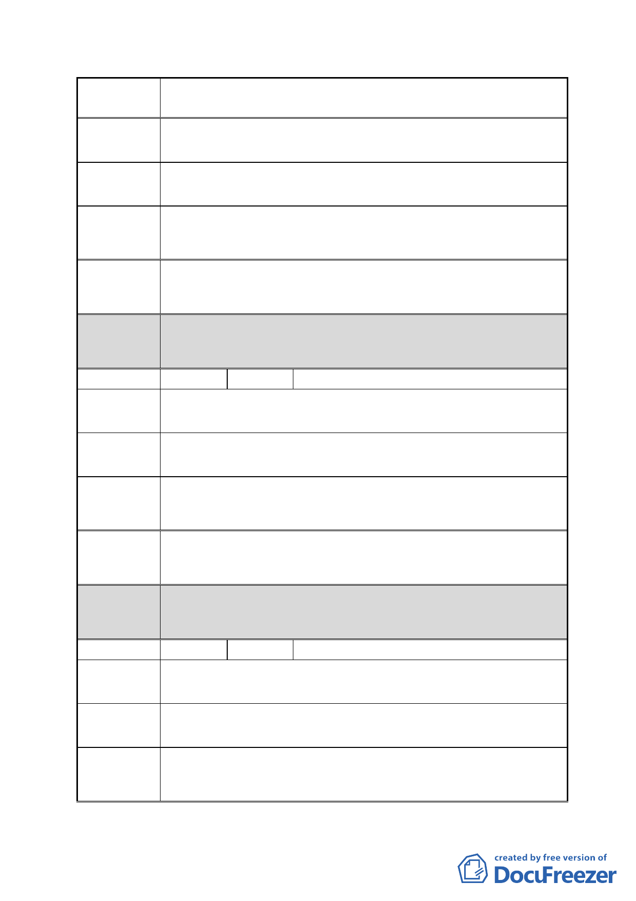

案 名 擬定臺北市南港區鐵路地下化沿線土地細部計畫案
南港路二段 23 巷 15 號
陳情地點
陳情理由
建議辦法
因自有土地坪數小（約有 20 坪），如果重劃會失居住房屋跟
土地，故反對重劃。
希望自己配合，不要回饋土地。
市府回應 同編號 7。
說明
都委會 1.本陳情地點非屬修正後細部計畫範圍。
決議 2.同意以市府回應說明辦理。
編號
17 陳情人 張燕玉
陳情地點 南港路二段 23 巷 15 號
陳情理由
建議辦法
個人的土地已經很少，如果再捐地，合建後根本連一間房子
都不夠。大家都是小市民，不能跟財團比較。
應免予回饋。
市府回應 同編號 7。
說明
都委會 1.本陳情地點非屬修正後細部計畫範圍。
決議 2.同意以市府回應說明辦理。
編號
18 陳情人 孔雲琛、孔張阿菊
南港路二段 23 巷 3 號
陳情地點
陳情理由
建議辦法
容積獎勵太少，不符合小地主基本需求，無法配合，也沒有
其他搬遷辦法。
提高基礎容積，降低回饋，使其變更仍有容身之處。
- 28 -